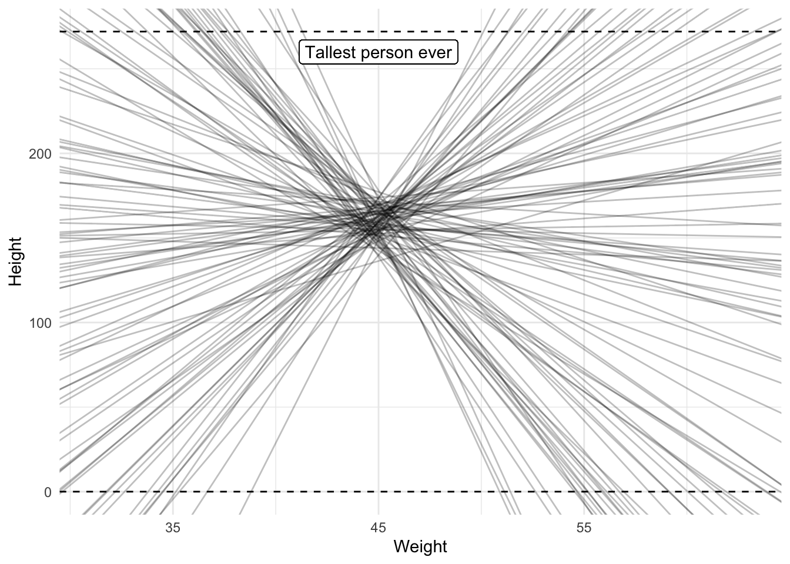
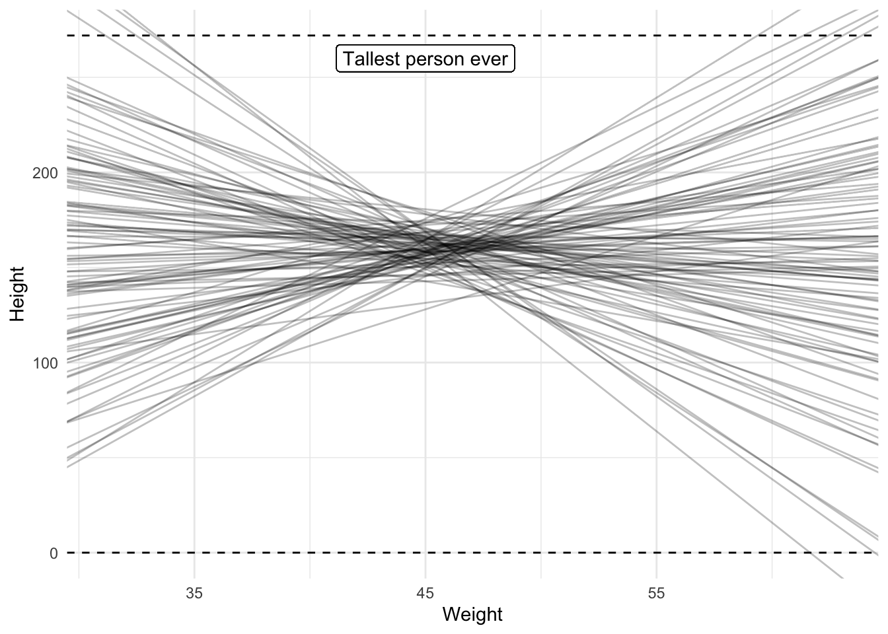
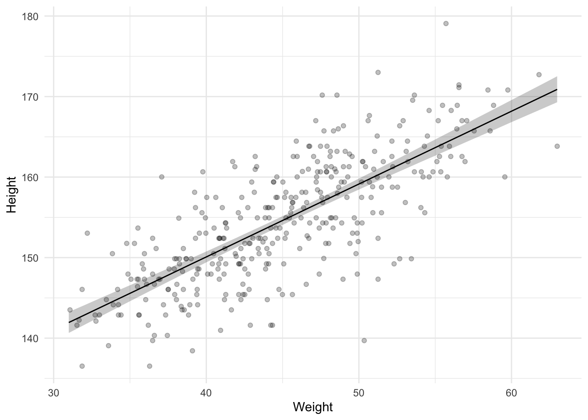
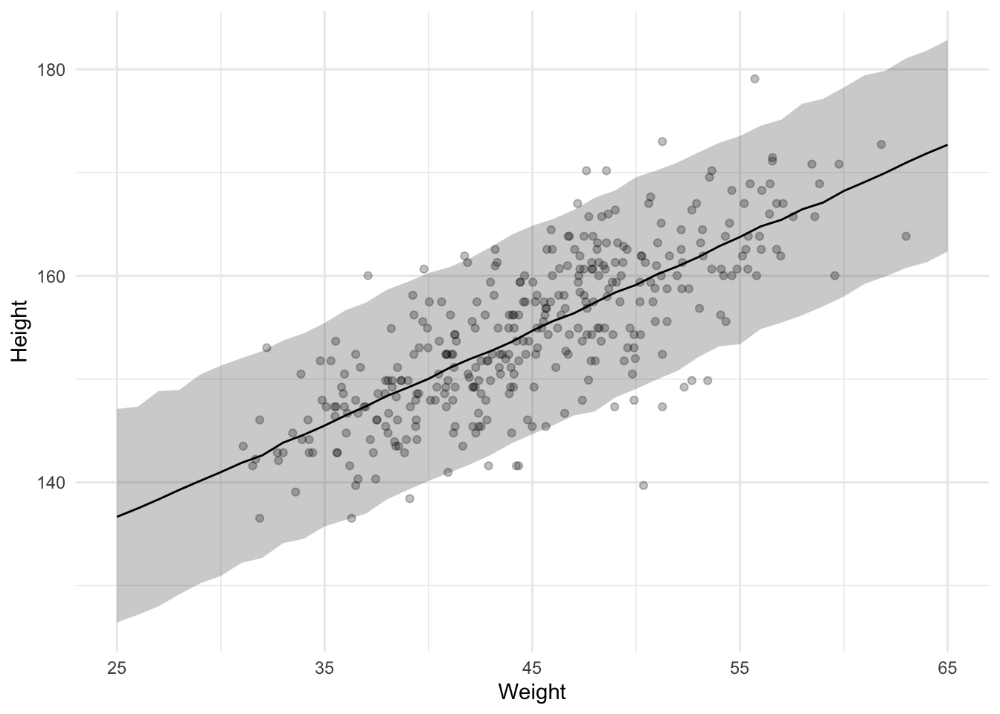

The second of a series of tutorial posts on Bayesian analyses. In this post I focus on using brms to run a regression with a single predictor.
Published
February 2, 2023
In my previous blog post I showed how to use brms and tidybayes to run an intercept-only model. Now let’s extend that model by adding a predictor.
The data is the same as in the previous post (including the filter that we only focus on people 18 years or older). This data contains weight data as well as height data, so that means we can run a model in which we regress heights onto weights, i.e., a regression with a single predictor.
If you want to follow along, run the following setup code.
The formula syntax for a model in which we regress heights onto weights is height ~ weight. We can use this formula in get_prior() to see which priors we need to specify.
Code
get_prior(height ~ weight, data = data)
prior class coef group resp dpar nlpar lb ub
(flat) b
(flat) b weight
student_t(3, 154.3, 8.5) Intercept
student_t(3, 0, 8.5) sigma 0
source
default
(vectorized)
default
default
The output is a bit trickier compared to the intercept-only model output. There’s the Intercept and sigma priors again, as well as two extra rows referring to a class called b. These two rows actually refer to the same prior, one refers specifically to the weight predictor and one refers to all predictors. If you run a model with many more predictors, you could set one prior that applies to all predictors. In this case though, we only have 1 predictor so it actually doesn’t matter, both refer to the same prior.
Recall from the previous post that I said writing down your model explicitly is a better way to understand what you’re doing, so let’s go ahead and do that.
We again specify that the heights are normally distributed, so we still have a \(\mu\) and \(\sigma\), but this time the \(\mu\) is no longer a parameter to estimate. Instead, it’s constructed from other parameters, \(\alpha\), \(\beta\), and an observed variable \(x_i\) (the weight observations).
If you’re used to linear regression equations, this notation should not surprise you. \(\alpha\) refers to the intercept and \(\beta\) to the slope.
We need to set priors on these parameters. The prior for \(\alpha\) can be the same as the prior for \(\mu\) from the previous intercept-only model if we center the data so the intercept refers to the average height of someone with an average weight, rather than someone with 0 weight (the default, which makes no sense). So let’s first mean center the weight observations.
Code
data <-mutate(data, weight_mc = weight -mean(weight))
Now we can use the same prior as before, which was a normal distribution with a mean of 160 and a standard deviation of 10 (assuming we did not update this as a result of the previous analysis).
Next is the prior for the slope. This represents the relationship between weights and heights. For every 1 increase in weight, how much do we think that the height will increase or decrease? We could begin with an agnostic prior in which we do not specify the direction and instead just add some uncertainty so the slope can go in either direction. For example, let’s put a normal distribution on the slope with a mean of 0 and a standard deviation of 10.
Finally, we have the prior for sigma (\(\sigma\)). To remind you, sigma refers to the standard deviation of the errors or the residual standard deviation. Now that we have a predictor that means the sigma can be less than what it was in the intercept-only model because some of the variance in heights might be explained by the weights, decreasing the size of the residuals and therefore sigma. So, if we believe in a relationship between heights and weights, we should change our prior for sigma so that it’s lower. Given that we used a prior for the slope that is agnostic (there could be a positive, negative, or no relationship), our prior for sigma could be left unchanged because it was broad enough to allow for these possibilities.
Prior predictive check
We can again create a prior predictive check to see whether our priors actually make sense. However, instead of plotting the predicted distribution of heights, we’re mostly interested in the relationship between weight and height, so we should plot a check of that relationship instead. We could simulate our own data like I did in the previous post or we can just run the Bayesian model and only draw from the prior, which I also did in the previous post and will do so again here.
Code
model_height_weight_prior <-brm( height ~ weight_mc, data = data, family = gaussian,prior =c(prior(normal(160, 10), class ="Intercept"),prior(cauchy(5, 5), class ="sigma"),prior(normal(0, 10), class ="b") ), sample_prior ="only",seed =4,file ="models/model_height_weight_prior.rds")
We can use the spread_draws() function to get draws from the posterior distribution of the intercept and slope parameters. With an intercept and slope we can visualize the relationship we’re interested in. Remember, though, that brms will give you 4000 draws by default from the posteriors. In other words, you get 4000 intercepts and slopes. That’s a bit much to visualize, so let’s only draw 100 intercepts and slopes.
To help make sense of the sensibility of the slopes I’ve added the average weight to the weights so we’re back on the normal scale and not the mean centered scale and I’ve added two dashed lines to indicate a very obvious minimum and a possible maximum height to help figure out whether the priors produce sensible results.
Code
draws <-spread_draws( model_height_weight_prior, b_Intercept, b_weight_mc,ndraws =100)weight_mean <- data %>%pull(weight) %>%mean()ggplot(data, aes(x = weight_mc, y = height)) +geom_blank() +geom_abline(data = draws,mapping =aes(intercept = b_Intercept, slope = b_weight_mc),alpha = .25 ) +geom_hline(yintercept =0, linetype ="dashed") +geom_hline(yintercept =272, linetype ="dashed") +geom_label(x =0, y =260, label ="Tallest person ever") +labs(x ="Weight", y ="Height") +scale_x_continuous(labels =function(x) round(x + weight_mean))

A prior predictive check of the relationship between weight and height
The plot shows a wide range of possible slopes, some of which are definitely unlikely because they lead to heights that are smaller than 0 or higher than the tallest person who ever lived. We should lower our uncertainty by reducing the standard deviation on the prior. In the next model I lower it to 3.
Additionally, the negative slopes are actually also pretty unlikely because we should expect a positive relationship between weight and height (taller people tend to be heavier). We could therefore also change our prior to force it to be positive using the lb argument in our prior for b or use a distribution that doesn’t allow for any negative values. Let’s not do this though. Let’s assume we have no idea whether the relationship will be positive or negative and instead focus on the standard deviation instead so that we don’t obtain relationships we definitely know are unlikely.
Code
model_height_weight_prior_2 <-brm( height ~ weight_mc, data = data, family = gaussian,prior =c(prior(normal(160, 10), class ="Intercept"),prior(cauchy(5, 5), class ="sigma"),prior(normal(0, 3), class ="b") ), sample_prior ="only",seed =4,file ="models/model_height_weight_prior_2.rds")
Let’s inspect the lines again.
Code
draws <-spread_draws( model_height_weight_prior_2, b_Intercept, b_weight_mc,ndraws =100)ggplot(data, aes(x = weight_mc, y = height)) +geom_blank() +geom_hline(yintercept =0, linetype ="dashed") +geom_hline(yintercept =272, linetype ="dashed") +geom_abline(data = draws,mapping =aes(intercept = b_Intercept, slope = b_weight_mc),alpha = .25 ) +geom_label(x =0, y =260, label ="Tallest person ever") +labs(x ="Weight", y ="Height") +scale_x_continuous(labels =function(x) round(x + weight_mean))

A prior predictive check of the relationship between weight and height
This looks a lot better, so let’s run the model for real now.
Code
model_height_weight <-brm(data = data, height ~ weight_mc,family = gaussian,prior =c(prior(normal(160, 10), class ="Intercept"),prior(cauchy(5, 5), class ="sigma"),prior(normal(0, 3), class ="b") ),sample_prior =TRUE,seed =4,file ="models/model_height_weight.rds")model_height_weight
Family: gaussian
Links: mu = identity; sigma = identity
Formula: height ~ weight_mc
Data: data (Number of observations: 352)
Draws: 4 chains, each with iter = 2000; warmup = 1000; thin = 1;
total post-warmup draws = 4000
Population-Level Effects:
Estimate Est.Error l-95% CI u-95% CI Rhat Bulk_ESS Tail_ESS
Intercept 154.60 0.28 154.07 155.14 1.00 3979 2809
weight_mc 0.90 0.04 0.82 0.99 1.00 4563 3129
Family Specific Parameters:
Estimate Est.Error l-95% CI u-95% CI Rhat Bulk_ESS Tail_ESS
sigma 5.11 0.19 4.74 5.51 1.00 4362 2791
Draws were sampled using sample(hmc). For each parameter, Bulk_ESS
and Tail_ESS are effective sample size measures, and Rhat is the potential
scale reduction factor on split chains (at convergence, Rhat = 1).
We see that the estimate for the weight predictor is 0.9. For every increase of weight by 1 we can expect height to increase by this number. We can also be fairly confident in this kind of relationship because the lower and upper bound of the 95% CI ranges from 0.82 to 0.99. These numbers are what we are usually interested in, but let’s also plot the the entire posterior for the slope estimate so can see the entire distribution and not just this summary. Let’s also add the prior so we can see how much that changed as a result of the data. This time we use gather_draws() to create a long data frame, instead of a wide data frame that you get with spread_draws().
Code
draws <- model_height_weight %>%gather_draws(prior_b, b_weight_mc) %>%mutate(distribution =if_else(str_detect(.variable, "prior"), "prior", "posterior" ) )ggplot(draws, aes(x = .value, fill =fct_rev(distribution))) +geom_histogram(binwidth =0.05, position ="identity") +labs(x ="Slope", y ="", fill ="Distribution") +scale_fill_manual(values =c(blue_2, blue_4)) +coord_cartesian(xlim =c(-5, 5))
Apparently our prior was still very uninformed because the posterior shows we can be confident in a much narrower range of slopes!
Let’s also create another plot in which we plot the slope and its posterior against the observed data. The way to do this is by first creating a data frame containing weights that we want to predict the heights for. The (mean-centered) weights in the data range from -13.92 to 18, so we can roughly use that same range.
Then we use add_epred_draws() to predict the expected height for each of the weights we stored in the data frame. This is not a single value. Instead, we get a distribution of possible heights for each weight value. We could plot all of these distributions, for example by creating a shaded region at each weight representing how likely the height is, or we can summarize that distribution of heights for each weight. The tidybayes package has the median_qi() function to summarize a distribution to a point and interval. By default it uses the median for the point summary and a 5% and 95% quartile range for the interval; the same summary we saw in the output from brm.
Code
slopes_qi <-tibble(weight_mc =seq(from =-15, to =20, by =1)) %>%add_epred_draws(model_height_weight) %>%median_qi()ggplot() +geom_ribbon(mapping =aes(ymin = .lower, ymax = .upper, x = weight_mc),data = slopes_qi,alpha = .25 ) +geom_line(mapping =aes(x = weight_mc, y = .epred),data = slopes_qi ) +geom_point(mapping =aes(x = weight_mc, y = height),data = data,alpha = .25 ) +labs(x ="Weight", y ="Height") +scale_x_continuous(labels =function(x) round(x + weight_mean))

This graph is great because it shows us how confident we can be in the regression line. It does omit one source of uncertainty, though. The previous plot only shows the uncertainty about the regression line (the intercept and slope). We can also make a plot with predicted values of individual heights, which also incorporates the uncertainty from the \(\sigma\) parameter. To get these values, we use add_predicted_draws().
Code
predicted_slopes_qi <-tibble(weight_mc =seq(from =-20, to =20, by =1)) %>%add_predicted_draws(model_height_weight) %>%median_qi()ggplot() +geom_ribbon(aes(ymin = .lower, ymax = .upper, x = weight_mc),data = predicted_slopes_qi,alpha = .25 ) +geom_line(aes(x = weight_mc, y = .prediction),data = predicted_slopes_qi ) +geom_point(aes(x = weight_mc, y = height),data = data,alpha = .25 ) +labs(x ="Weight", y ="Height") +scale_x_continuous(labels =function(x) round(x + weight_mean))

While this graph is pretty cool, I haven’t ever seen one in a social psychology paper, probably because academic psychologists are mostly interested in the parameters (e.g., means, correlations) rather than predicting individual observations.
Summary
In this post I showed how to run a single predictor model in brms. The addition of a predictor meant that the previous intercept-only model had to be updated by turning the \(\mu\) parameter into a regression equation. This then required an additional prior for the slope. To help set a prior on the slope, I created a prior predictive check of the slope. Running the model itself was straightforward and I provided several visualizations to help understand the results, including visualizing the posteriors of the slope parameter, the slope across the range of weights, and individual predicted heights.
In the next post I’ll show how to use brms to analyze correlations.
This post was last updated on 2023-08-07.
Source Code
---title: "Bayesian tutorial: Single predictor regression"description: "The second of a series of tutorial posts on Bayesian analyses. In this post I focus on using brms to run a regression with a single predictor."date: 2023-02-02categories: - statistics - tutorial - Bayesian statistics - regressioncode-fold: truecode-tools: truetoc: true---In my previous [blog post](../5-bayesian-tutorial-intercept-only/bayesian-tutorial-intercept-only.qmd) I showed how to use brms and `tidybayes` to run an intercept-only model. Now let's extend that model by adding a predictor.The [data](Howell1.csv) is the same as in the previous post (including the filter that we only focus on people 18 years or older). This data contains weight data as well as height data, so that means we can run a model in which we regress heights onto weights, i.e., a regression with a single predictor.If you want to follow along, run the following setup code.```{r}#| label: setup#| message: falselibrary(tidyverse)library(brms)library(tidybayes)theme_set(theme_minimal())blue_1 <-"#d1e1ec"blue_2 <-"#b3cde0"blue_3 <-"#6497b1"blue_4 <-"#005b96"blue_5 <-"#03396c"blue_6 <-"#011f4b"options(mc.cores =4,brms.threads =4,brms.backend ="cmdstanr",brms.file_refit ="on_change")data <-read_csv("Howell1.csv")data <-filter(data, age >=18)```## Adding a single predictorThe formula syntax for a model in which we regress heights onto weights is `height ~ weight`. We can use this formula in `get_prior()` to see which priors we need to specify.```{r}#| label: get-priors-predictorget_prior(height ~ weight, data = data)```The output is a bit trickier compared to the intercept-only model output. There's the Intercept and sigma priors again, as well as two extra rows referring to a class called `b`. These two rows actually refer to the same prior, one refers specifically to the weight predictor and one refers to all predictors. If you run a model with many more predictors, you could set one prior that applies to all predictors. In this case though, we only have 1 predictor so it actually doesn't matter, both refer to the same prior.Recall from the previous post that I said writing down your model explicitly is a better way to understand what you're doing, so let's go ahead and do that.$$\displaylines{heights_i ∼ Normal(\mu_i, \sigma) \\ \mu_i = \alpha + \beta x_i}$$We again specify that the heights are normally distributed, so we still have a $\mu$ and $\sigma$, but this time the $\mu$ is no longer a parameter to estimate. Instead, it's constructed from other parameters, $\alpha$, $\beta$, and an observed variable $x_i$ (the weight observations).If you're used to linear regression equations, this notation should not surprise you. $\alpha$ refers to the intercept and $\beta$ to the slope.We need to set priors on these parameters. The prior for $\alpha$ can be the same as the prior for $\mu$ from the previous intercept-only model if we center the data so the intercept refers to the average height of someone with an average weight, rather than someone with 0 weight (the default, which makes no sense). So let's first mean center the weight observations.```{r}#| label: mean-center-weightdata <-mutate(data, weight_mc = weight -mean(weight))```Now we can use the same prior as before, which was a normal distribution with a mean of 160 and a standard deviation of 10 (assuming we did not update this as a result of the previous analysis).Next is the prior for the slope. This represents the relationship between weights and heights. For every 1 increase in weight, how much do we think that the height will increase or decrease? We could begin with an agnostic prior in which we do not specify the direction and instead just add some uncertainty so the slope can go in either direction. For example, let's put a normal distribution on the slope with a mean of 0 and a standard deviation of 10.Finally, we have the prior for sigma ($\sigma$). To remind you, sigma refers to the standard deviation of the errors or the residual standard deviation. Now that we have a predictor that means the sigma can be less than what it was in the intercept-only model because some of the variance in heights might be explained by the weights, decreasing the size of the residuals and therefore sigma. So, if we believe in a relationship between heights and weights, we should change our prior for sigma so that it's lower. Given that we used a prior for the slope that is agnostic (there could be a positive, negative, or no relationship), our prior for sigma could be left unchanged because it was broad enough to allow for these possibilities.## Prior predictive checkWe can again create a prior predictive check to see whether our priors actually make sense. However, instead of plotting the predicted distribution of heights, we're mostly interested in the relationship between weight and height, so we should plot a check of that relationship instead. We could simulate our own data like I did in the previous post or we can just run the Bayesian model and only draw from the prior, which I also did in the previous post and will do so again here.```{r}#| label: weight-prior#| fig-cap: Several priors for $\beta$model_height_weight_prior <-brm( height ~ weight_mc, data = data, family = gaussian,prior =c(prior(normal(160, 10), class ="Intercept"),prior(cauchy(5, 5), class ="sigma"),prior(normal(0, 10), class ="b") ), sample_prior ="only",seed =4,file ="models/model_height_weight_prior.rds")```We can use the `spread_draws()` function to get draws from the posterior distribution of the intercept and slope parameters. With an intercept and slope we can visualize the relationship we're interested in. Remember, though, that brms will give you 4000 draws by default from the posteriors. In other words, you get 4000 intercepts and slopes. That's a bit much to visualize, so let's only draw 100 intercepts and slopes.To help make sense of the sensibility of the slopes I've added the average weight to the weights so we're back on the normal scale and not the mean centered scale and I've added two dashed lines to indicate a very obvious minimum and a possible maximum height to help figure out whether the priors produce sensible results.```{r}#| label: prior-predictive-check-weight#| fig-cap: A prior predictive check of the relationship between weight and heightdraws <-spread_draws( model_height_weight_prior, b_Intercept, b_weight_mc,ndraws =100)weight_mean <- data %>%pull(weight) %>%mean()ggplot(data, aes(x = weight_mc, y = height)) +geom_blank() +geom_abline(data = draws,mapping =aes(intercept = b_Intercept, slope = b_weight_mc),alpha = .25 ) +geom_hline(yintercept =0, linetype ="dashed") +geom_hline(yintercept =272, linetype ="dashed") +geom_label(x =0, y =260, label ="Tallest person ever") +labs(x ="Weight", y ="Height") +scale_x_continuous(labels =function(x) round(x + weight_mean))```The plot shows a wide range of possible slopes, some of which are definitely unlikely because they lead to heights that are smaller than 0 or higher than the tallest person who ever lived. We should lower our uncertainty by reducing the standard deviation on the prior. In the next model I lower it to 3.Additionally, the negative slopes are actually also pretty unlikely because we should expect a positive relationship between weight and height (taller people tend to be heavier). We could therefore also change our prior to force it to be positive using the `lb` argument in our prior for `b` or use a distribution that doesn't allow for any negative values. Let's not do this though. Let's assume we have no idea whether the relationship will be positive or negative and instead focus on the standard deviation instead so that we don't obtain relationships we definitely know are unlikely.```{r}#| label: weight-updated-priormodel_height_weight_prior_2 <-brm( height ~ weight_mc, data = data, family = gaussian,prior =c(prior(normal(160, 10), class ="Intercept"),prior(cauchy(5, 5), class ="sigma"),prior(normal(0, 3), class ="b") ), sample_prior ="only",seed =4,file ="models/model_height_weight_prior_2.rds")```Let's inspect the lines again.```{r}#| label: prior-predictive-check-weight-update#| fig-cap: A prior predictive check of the relationship between weight and heightdraws <-spread_draws( model_height_weight_prior_2, b_Intercept, b_weight_mc,ndraws =100)ggplot(data, aes(x = weight_mc, y = height)) +geom_blank() +geom_hline(yintercept =0, linetype ="dashed") +geom_hline(yintercept =272, linetype ="dashed") +geom_abline(data = draws,mapping =aes(intercept = b_Intercept, slope = b_weight_mc),alpha = .25 ) +geom_label(x =0, y =260, label ="Tallest person ever") +labs(x ="Weight", y ="Height") +scale_x_continuous(labels =function(x) round(x + weight_mean))```This looks a lot better, so let's run the model for real now.```{r}#| label: weight-modelmodel_height_weight <-brm(data = data, height ~ weight_mc,family = gaussian,prior =c(prior(normal(160, 10), class ="Intercept"),prior(cauchy(5, 5), class ="sigma"),prior(normal(0, 3), class ="b") ),sample_prior =TRUE,seed =4,file ="models/model_height_weight.rds")model_height_weight```We see that the estimate for the weight predictor is `r round(fixef(model_height_weight)[2, 1], 2)`. For every increase of weight by 1 we can expect height to increase by this number. We can also be fairly confident in this kind of relationship because the lower and upper bound of the 95% CI ranges from `r round(fixef(model_height_weight)[2, 3], 2)` to `r round(fixef(model_height_weight)[2, 4], 2)`. These numbers are what we are usually interested in, but let's also plot the the entire posterior for the slope estimate so can see the entire distribution and not just this summary. Let's also add the prior so we can see how much that changed as a result of the data. This time we use `gather_draws()` to create a long data frame, instead of a wide data frame that you get with `spread_draws()`.```{r}#| label: weight-prior-posterior#| warning: falsedraws <- model_height_weight %>%gather_draws(prior_b, b_weight_mc) %>%mutate(distribution =if_else(str_detect(.variable, "prior"), "prior", "posterior" ) )ggplot(draws, aes(x = .value, fill =fct_rev(distribution))) +geom_histogram(binwidth =0.05, position ="identity") +labs(x ="Slope", y ="", fill ="Distribution") +scale_fill_manual(values =c(blue_2, blue_4)) +coord_cartesian(xlim =c(-5, 5))```Apparently our prior was still very uninformed because the posterior shows we can be confident in a much narrower range of slopes!Let's also create another plot in which we plot the slope and its posterior against the observed data. The way to do this is by first creating a data frame containing weights that we want to predict the heights for. The (mean-centered) weights in the data range from `r round(min(data$weight_mc), 2)` to `r round(max(data$weight_mc), 2)`, so we can roughly use that same range.Then we use `add_epred_draws()` to predict the expected height for each of the weights we stored in the data frame. This is not a single value. Instead, we get a distribution of possible heights for each weight value. We could plot all of these distributions, for example by creating a shaded region at each weight representing how likely the height is, or we can summarize that distribution of heights for each weight. The `tidybayes` package has the `median_qi()` function to summarize a distribution to a point and interval. By default it uses the median for the point summary and a 5% and 95% quartile range for the interval; the same summary we saw in the output from `brm`.```{r}#| label: weight-slopeslopes_qi <-tibble(weight_mc =seq(from =-15, to =20, by =1)) %>%add_epred_draws(model_height_weight) %>%median_qi()ggplot() +geom_ribbon(mapping =aes(ymin = .lower, ymax = .upper, x = weight_mc),data = slopes_qi,alpha = .25 ) +geom_line(mapping =aes(x = weight_mc, y = .epred),data = slopes_qi ) +geom_point(mapping =aes(x = weight_mc, y = height),data = data,alpha = .25 ) +labs(x ="Weight", y ="Height") +scale_x_continuous(labels =function(x) round(x + weight_mean))```This graph is great because it shows us how confident we can be in the regression line. It does omit one source of uncertainty, though. The previous plot only shows the uncertainty about the regression line (the intercept and slope). We can also make a plot with predicted values of individual heights, which also incorporates the uncertainty from the $\sigma$ parameter. To get these values, we use `add_predicted_draws()`.```{r}#| label: weight-slope-predictedpredicted_slopes_qi <-tibble(weight_mc =seq(from =-20, to =20, by =1)) %>%add_predicted_draws(model_height_weight) %>%median_qi()ggplot() +geom_ribbon(aes(ymin = .lower, ymax = .upper, x = weight_mc),data = predicted_slopes_qi,alpha = .25 ) +geom_line(aes(x = weight_mc, y = .prediction),data = predicted_slopes_qi ) +geom_point(aes(x = weight_mc, y = height),data = data,alpha = .25 ) +labs(x ="Weight", y ="Height") +scale_x_continuous(labels =function(x) round(x + weight_mean))```While this graph is pretty cool, I haven't ever seen one in a social psychology paper, probably because academic psychologists are mostly interested in the parameters (e.g., means, correlations) rather than predicting individual observations.## SummaryIn this post I showed how to run a single predictor model in brms. The addition of a predictor meant that the previous intercept-only model had to be updated by turning the $\mu$ parameter into a regression equation. This then required an additional prior for the slope. To help set a prior on the slope, I created a prior predictive check of the slope. Running the model itself was straightforward and I provided several visualizations to help understand the results, including visualizing the posteriors of the slope parameter, the slope across the range of weights, and individual predicted heights.In the next post I'll show how to use brms to analyze correlations.*This post was last updated on `r format(Sys.Date(), "%Y-%m-%d")`.*